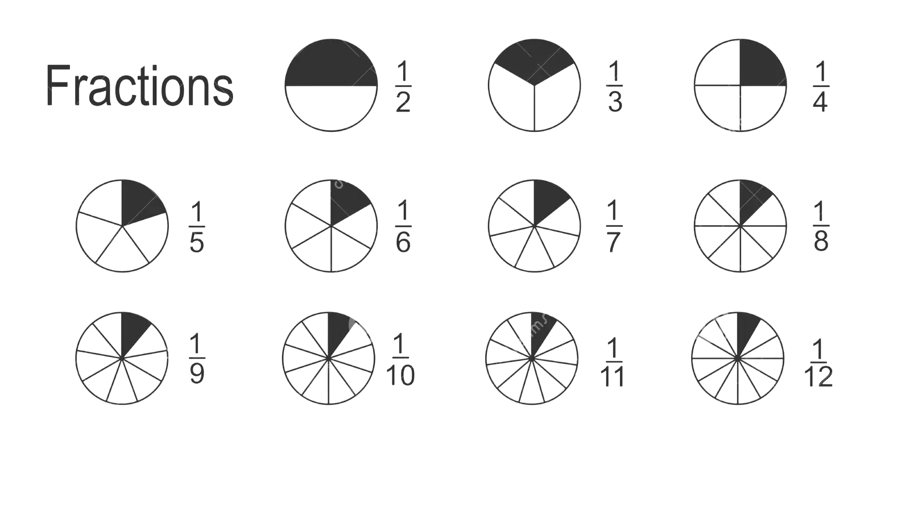
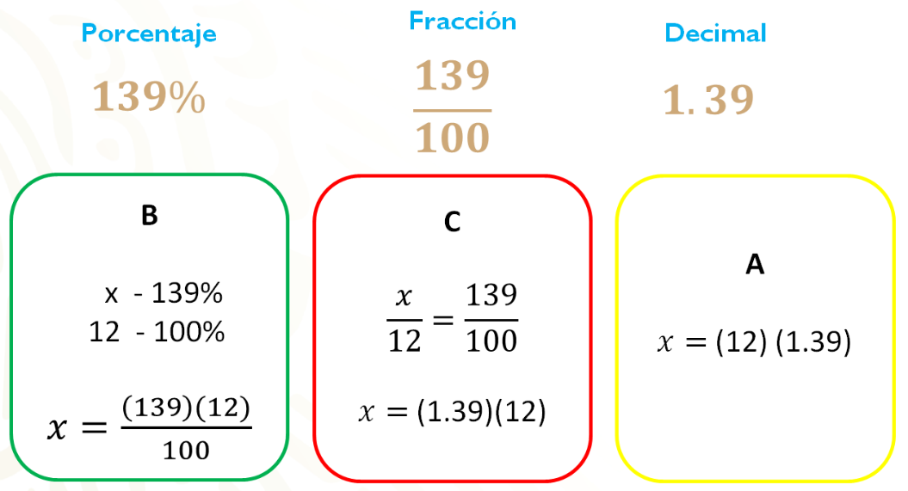

FRACCIONES
Las fracciones son una forma de representar partes de un todo. Están compuestas por dos números: el numerador, que va arriba y representa cuántas partes se toman, y el denominador, que va abajo y muestra en cuántas partes se divide el todo.

DECIMALES
Los decimales son una forma de representar números no enteros, es decir, cantidades que están entre dos números enteros. Se escriben usando una coma o punto decimal, que separa la parte entera de la parte fraccionaria.
PORCENTAJE
Para sacar el porcentaje de un número, debes multiplicar ese número por el porcentaje que quieres calcular y luego dividir entre 100.
Aquí tienes la fórmula básica:
Porcentaje
=
Numero
×
Porcentaje deseado/
100

CONVERCION
La conversión de medidas de almacenamiento es el proceso de cambiar una unidad de almacenamiento digital a otra equivalente, como pasar de kilobytes a megabytes, de gigabytes a terabytes, etc. Se usa para entender o comparar mejor cuánta información puede guardar un dispositivo, archivo o sistema.

Porcentaje = Numero × Porcentaje deseado/ 100